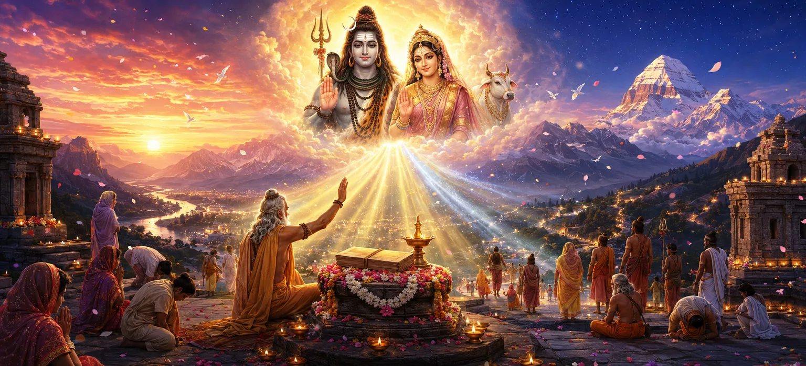

ऋषि अब शिव पुराण माहात्म्य को उसके पवित्र निष्कर्ष पर लाते हैं। दिव्य उत्पत्ति, आध्यात्मिक महानता, परिवर्तनकारी शिक्षाओं और शिव पुराण से जुड़े विशाल पुरस्कारों की व्याख्या करने के बाद, वे सभी साधकों के लिए इसके सर्वोच्च मूल्य का सारांश देते हैं। करुणा और ज्ञान के साथ, वे हर उस व्यक्ति को अंतिम आशीर्वाद देते हैं जो इस पवित्र ग्रंथ को सुनता है, अध्ययन करता है, सुनाता है, संरक्षित करता है या साझा करता है। माहात्म्य इस आश्वासन के साथ समाप्त होता है कि भगवान शिव के प्रति समर्पण और उनके पुराण के प्रति श्रद्धा से स्थायी शांति, आध्यात्मिक उत्थान और परम मुक्ति मिलती है।
ऋषियों ने शिव पुराण की महिमा को पूर्ण रूप से प्रकट करते हुए अपना प्रवचन समाप्त किया। हालाँकि शिक्षा अपने अंत तक पहुँचती है, लेकिन इसमें निहित ज्ञान शाश्वत रहता है। पुराण में संरक्षित पवित्र सत्य पीढ़ी-दर-पीढ़ी भक्तों का मार्गदर्शन करते हैं और उन्हें भक्ति और धर्म की ओर प्रेरित करते हैं।
जो लोग शिव पुराण को ईमानदारी और विश्वास के साथ सुनते हैं उन्हें अत्यधिक आध्यात्मिक पुण्य प्राप्त होता है। उनके हृदय शुद्ध हो जाते हैं, उनकी भक्ति गहरी हो जाती है, और दिव्य सत्य के बारे में उनकी समझ मजबूत हो जाती है। ऐसे श्रोता धीरे-धीरे अधिक शांति, संतुष्टि और भगवान शिव की निकटता का अनुभव करते हैं।
ऋषियों का कथन है कि जो लोग नियमित रूप से शिव पुराण का पाठ, अध्ययन और पाठ करते हैं, उन्हें भगवान शिव की विशेष कृपा प्राप्त होती है। उनके मन ज्ञान से प्रकाशित हो जाते हैं, और उनकी आध्यात्मिक साधनाएँ अधिक फलदायी हो जाती हैं। पवित्र शिक्षाओं के साथ निरंतर जुड़ाव के माध्यम से, वे ईश्वर के साथ अपना संबंध मजबूत करते हैं।
भगवान शिव की करुणा सभी सच्चे भक्तों पर फैली हुई है, चाहे उनकी पृष्ठभूमि या परिस्थिति कुछ भी हो। भक्ति, विनम्रता और विश्वास के माध्यम से, व्यक्तियों को दिव्य सुरक्षा और मार्गदर्शन प्राप्त होता है। संत सभी को याद दिलाते हैं कि शिव की कृपा सबसे कठिन परिस्थितियों को भी आध्यात्मिक विकास के अवसरों में बदल सकती है।
संपूर्ण माहात्म्य को सुनने के बाद, देवराज अंततः इसके गहन महत्व को समझते हैं। उसे एहसास होता है कि सच्चा धन सांसारिक उपलब्धियों में नहीं बल्कि भक्ति, ज्ञान और दैवीय कृपा में निहित है। कृतज्ञता से भरकर, वह खुद को पूरे दिल से भगवान शिव के मार्ग पर समर्पित कर देता है।
शिव पुराण की शिक्षाएँ सभी लोगों के लिए हैं। वे सामाजिक भेदभाव से परे हैं और मानवता को याद दिलाते हैं कि हर आत्मा भक्ति, ईमानदारी और धार्मिक आचरण के माध्यम से भगवान शिव तक पहुंच सकती है। आध्यात्मिक विकास का मार्ग उन सभी के लिए खुला रहता है जो इसे शुद्ध हृदय से खोजते हैं।
भगवान शिव सभी सच्चे भक्तों को मार्गदर्शन और सुरक्षा का आशीर्वाद देते हैं।
शिव पुराण सत्य और भक्ति के मार्ग पर प्रकाश डालता है।
भगवान शिव की भक्ति अंततः आध्यात्मिक स्वतंत्रता की ओर ले जाती है।
संत समझाते हैं कि पवित्र ग्रंथ युगों-युगों तक धर्म के संरक्षण में आवश्यक भूमिका निभाते हैं। शिव पुराण कालातीत आध्यात्मिक मूल्यों की रक्षा करता है और यह सुनिश्चित करता है कि आने वाली पीढ़ियाँ दिव्य ज्ञान से जुड़ी रहें। इसकी शिक्षाओं का अध्ययन, संरक्षण और साझा करके, भक्त आध्यात्मिक विरासत की सुरक्षा के महान कार्य में भागीदार बनते हैं।
शिव पुराण में निहित कहानियाँ ऐतिहासिक वृत्तांतों से कहीं अधिक हैं। वे जीवित आध्यात्मिक पाठ हैं जो भक्ति, साहस, विनम्रता और विश्वास को प्रेरित करते रहते हैं। इन पवित्र आख्यानों के माध्यम से, साधक गहन सत्य सीखते हैं जो समय या स्थान की परवाह किए बिना प्रासंगिक बने रहते हैं।
संत घोषित करते हैं कि सबसे बड़ा खजाना जो कोई व्यक्ति प्राप्त कर सकता है वह भौतिक धन नहीं बल्कि आध्यात्मिक अनुभूति है। शिव पुराण भक्तों को भक्ति, आत्म-अनुशासन, ज्ञान और ईश्वर के प्रति समर्पण की शिक्षा देकर इस अमूल्य लक्ष्य की ओर मार्गदर्शन करता है। जो लोग इन शिक्षाओं को अपनाते हैं उन्हें एक ऐसी संतुष्टि मिलती है जो सांसारिक सफलता से भी बढ़कर होती है।
संत भक्तों को शिव पुराण की शिक्षाओं को भावी पीढ़ियों तक पहुँचाने के लिए प्रोत्साहित करते हैं। ऐसा करने से घरों, मंदिरों और समुदायों में दिव्य ज्ञान की रोशनी चमकती रहती है। प्रत्येक पीढ़ी पवित्र ज्ञान की संरक्षक और आध्यात्मिक परंपरा की अटूट श्रृंखला की एक कड़ी बन जाती है।
शिव पुराण माहात्म्य सिखाता है कि भक्ति, पवित्र ज्ञान और ईमानदार आध्यात्मिक प्रयास जीवन को बदलने की शक्ति रखते हैं। इस ग्रंथ का वास्तविक उद्देश्य केवल सूचित करना नहीं है, बल्कि हृदय को जागृत करना, विश्वास को मजबूत करना और प्रत्येक आत्मा को भगवान शिव की ओर मार्गदर्शन करना है। जो लोग इसे श्रद्धा से देखते हैं उन्हें ऐसे आशीर्वाद प्राप्त होते हैं जो इस जीवनकाल से भी आगे तक फैलते हैं।
संतों ने सभी भक्तों को आशीर्वाद देकर अपना प्रवचन समाप्त किया। जो लोग शिव पुराण को सुनते, पढ़ते, सुनाते, संरक्षित करते या साझा करते हैं उन्हें ज्ञान, भक्ति, समृद्धि, शांति और आध्यात्मिक पूर्ति का आशीर्वाद मिले। भगवान शिव उनकी बाधाओं को दूर करें और उन्हें सर्वोच्च भलाई की ओर मार्गदर्शन करें।
जैसे ही माहात्म्य समाप्त होता है, संदेश स्पष्ट हो जाता है: भगवान शिव की कृपा उन सभी के लिए उपलब्ध है जो ईमानदारी और भक्ति के साथ उनके पास आते हैं। स्मरण, पूजा, अध्ययन और धार्मिक जीवन के माध्यम से, प्रत्येक आत्मा ईश्वर के करीब आ सकती है और स्थायी आध्यात्मिक खुशी प्राप्त कर सकती है।
"शिव पुराण का पवित्र ज्ञान हर दिल को रोशन करे, हर आत्मा को मजबूत करे और सभी प्राणियों को भगवान शिव की शाश्वत कृपा की ओर मार्गदर्शन करे।"
आपने शिव पुराण माहात्म्य के माध्यम से पवित्र यात्रा पूरी की है। इसकी दिव्य उत्पत्ति, महिमा, शिक्षाओं और आशीर्वादों को जानने के बाद, अब आप माहात्म्य अवलोकन पर लौट सकते हैं या पवित्र शिव पुराण और इसकी दिव्य संहिताओं की खोज जारी रख सकते हैं।